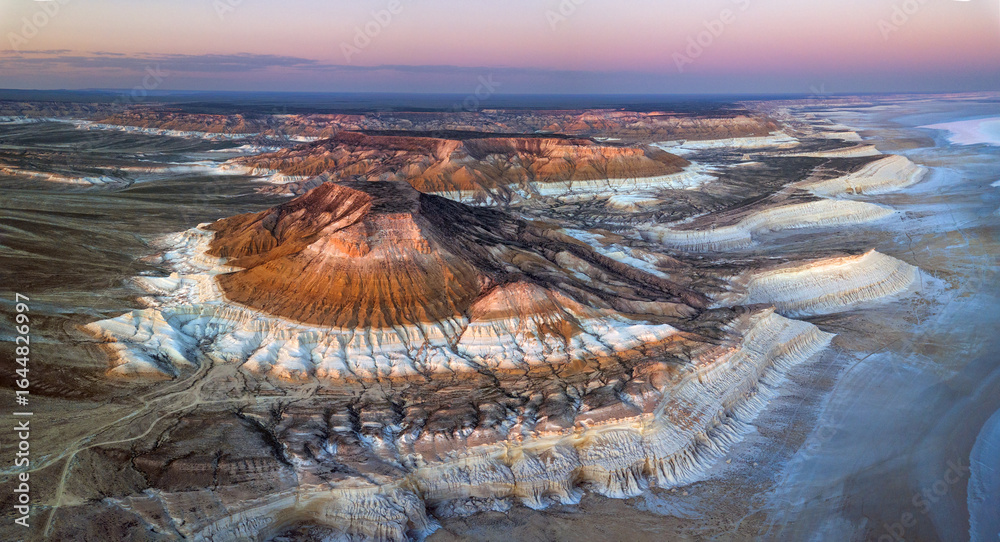
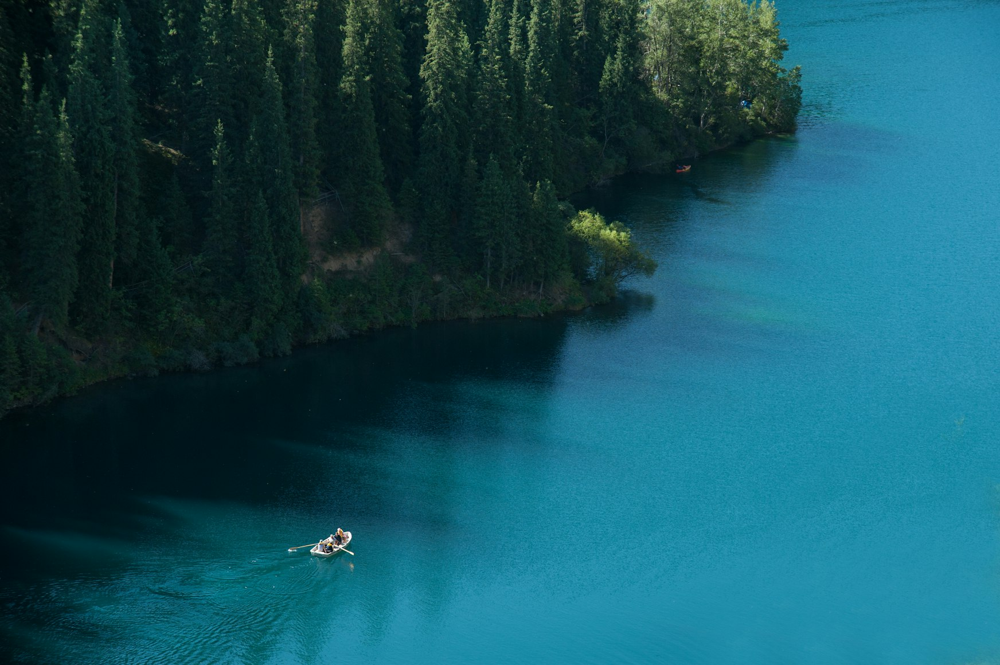
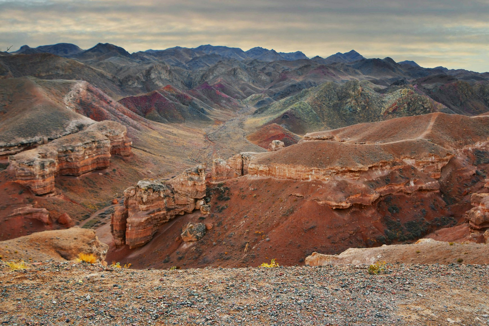
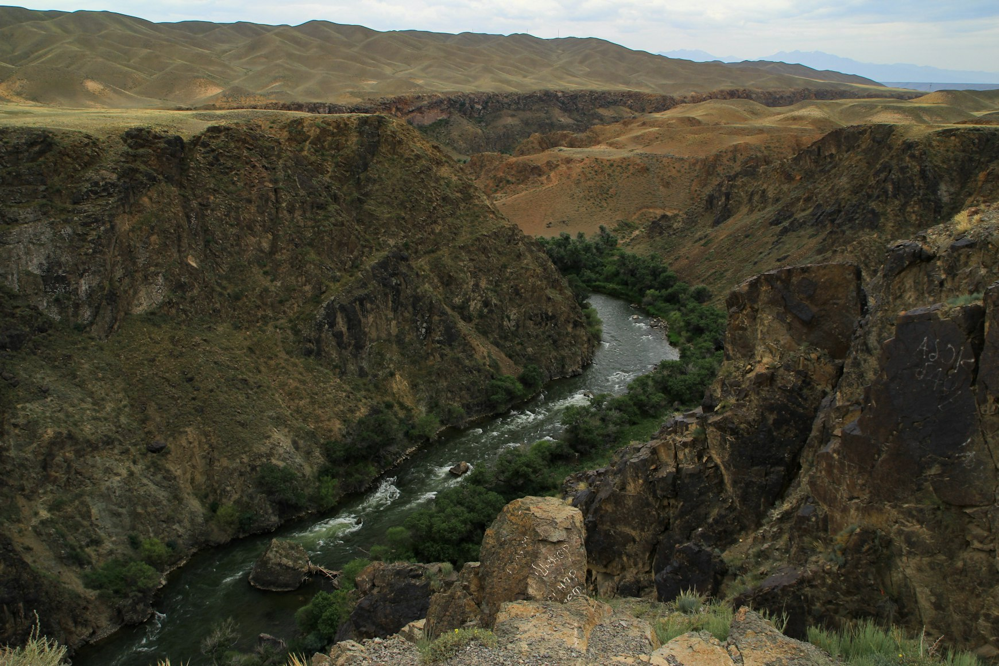
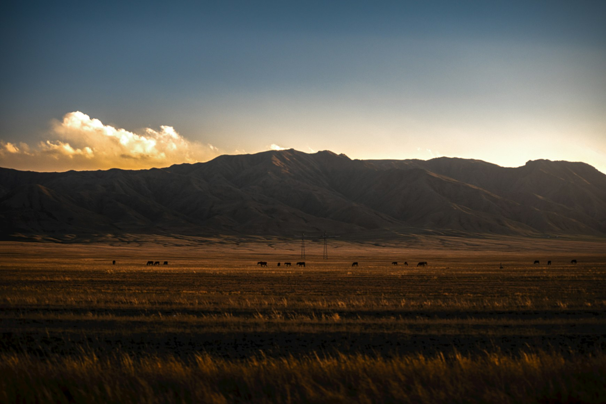

There are countries that impress you immediately.
Kazakhstan is not one of them.
It reveals itself slowly — through distance, silence, weather, and scale. Through roads that continue for hours without interruption. Through landscapes so empty they begin to feel psychologically unfamiliar. Through moments when the horizon becomes larger than your ability to emotionally process it.
For many travelers, Kazakhstan does not feel exotic in the traditional sense. It feels stranger than that.
As if certain parts of the country were designed according to different physical rules.
Not more beautiful than Earth.
Just slightly detached from it.
Mangystau and the Geometry of Emptiness
In western Kazakhstan, near the Caspian Sea, the landscape begins to lose all resemblance to ordinary geography.
Mangystau is a region of white chalk mountains, collapsed canyons, dry salt flats, and enormous stone valleys that appear almost surgically carved into the desert. The terrain feels unfinished in the most beautiful way — raw, exposed, stripped down to shape and texture.

At Bozzhyra, one of the most surreal places in the country, sharp limestone cliffs rise from empty plains like fragments of another world. At sunrise, the rock formations turn pale silver. By evening they become the color of ash and bone.
There is almost nothing here.
No cities nearby. No crowds. Very little sound besides wind.
And that silence changes the way people behave.
Conversations become quieter. Movements slow down. Time begins to stretch strangely across the landscape.
The emptiness feels physical.
Almost architectural.
The Sunken Forest of Kaindy Lake
Some places feel unreal because they are too beautiful.
Kaindy Lake feels unreal because the scene itself seems impossible.
After an earthquake in 1911 triggered a massive landslide, water flooded a forest valley deep in the Tian Shan mountains. More than a century later, the dead spruce trees still stand upright beneath the surface of the lake, their pale trunks emerging from the water like the remains of submerged ships.

The lake is cold even in summer. The water carries a metallic blue-green color that changes with the weather. On cloudy days, the entire landscape feels suspended inside gray light.
Nothing moves very quickly here.
The forest surrounding the lake absorbs sound. Wind arrives softly through the trees. Horses occasionally appear near the shoreline before disappearing back into the hills.
There are moments at Kaindy when the world stops feeling entirely contemporary.
Not ancient.
Not modern.
Just disconnected from normal time.
Charyn Canyon at the Edge of Evening
Photographs rarely capture what Charyn Canyon actually feels like.
During the middle of the day, it can appear almost familiar — another dramatic canyon, another desert landscape shaped by erosion and heat.

But toward evening, the atmosphere changes completely.
Shadows begin climbing the canyon walls. The temperature drops. The red stone slowly loses color and turns dark violet beneath the fading light. Wind moves through narrow passages between rock formations that resemble abandoned towers and ruined corridors.
The canyon becomes quieter after sunset.
Not empty.
Just less human.
You begin noticing smaller sounds: gravel shifting under shoes, distant birds somewhere above the cliffs, air moving through stone.
Places like Charyn feel cinematic in photographs.
In reality, they feel older than cinema itself.
Kolsai Lakes and the Feeling of Distance
In southeastern Kazakhstan, the landscape changes once again.
The deserts disappear. Pine forests emerge. Mountain air replaces dry heat.
The Kolsai Lakes sit hidden within the northern Tian Shan mountains, surrounded by dark spruce forests and steep hillsides where horses graze in silence near the water.

Early mornings here feel almost unnaturally still. Mist hangs above the lake surface while the forest reflects perfectly in cold green water. Wooden boats drift quietly near the shore. Smoke from distant guesthouses rises into the trees.
But what makes Kolsai memorable is not only beauty.
It is distance.
The emotional feeling of being far from the speed of the modern world.
Far from airports. Far from noise. Far from the constant visual pressure of global tourism.
Places like this are becoming increasingly rare.
The Steppe After Dark
Perhaps the most alien experience in Kazakhstan happens not at a destination, but between destinations.
At night, the central steppe becomes one of the emptiest landscapes many travelers will ever experience.

Roads continue through darkness for hours without towns or visible structures. Truck headlights appear from impossible distances. Fuel stations emerge alone beside the highway like temporary outposts at the edge of civilization.
Then everything disappears again.
Under clear skies, the stars over the steppe feel physically closer than usual. Without city lights, the horizon dissolves almost entirely into darkness.
The scale becomes difficult to understand emotionally.
Kazakhstan is one of the few places left where emptiness still feels truly enormous.
Not curated emptiness.
Real emptiness.
A Country Existing Slightly Outside the Algorithm
Part of what makes Kazakhstan feel so unusual today is that much of it still exists outside the polished visual language of global tourism.
Many landscapes remain difficult to access. Large regions have little infrastructure. Some places still feel undocumented compared to the heavily photographed destinations that dominate social media.
That will not last forever.
Roads improve. Tourism grows. Drone footage spreads across the internet. Places once known mostly within Central Asia slowly enter international travel culture.
But for now, Kazakhstan still preserves something increasingly difficult to find:
The feeling of discovering a place before it has been fully translated for the world.
And perhaps that is why the country stays in memory so intensely.
Not because it constantly tries to impress you.
But because so much of it feels completely indifferent to your presence.